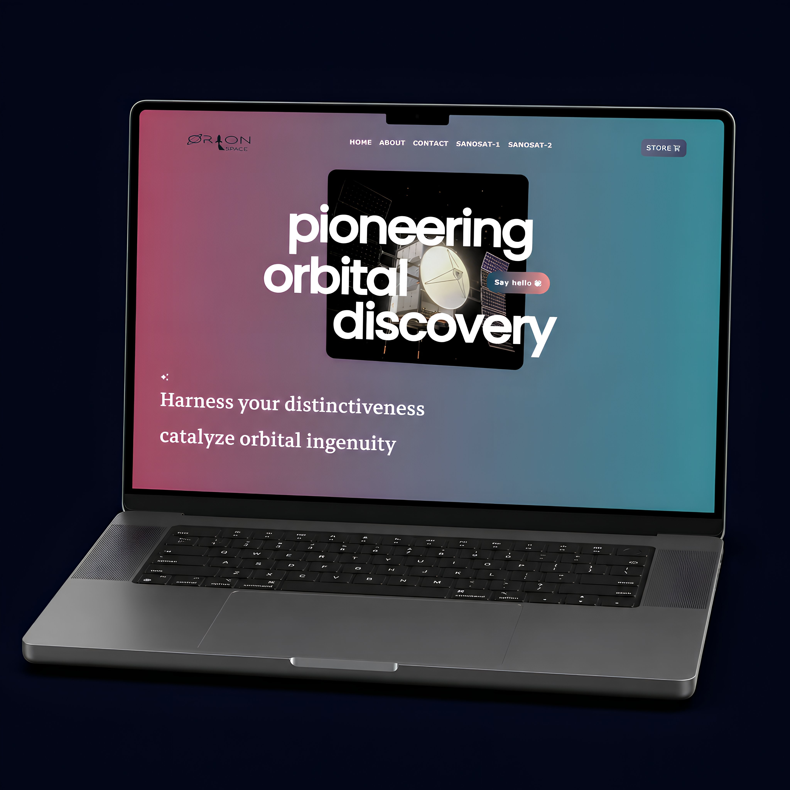
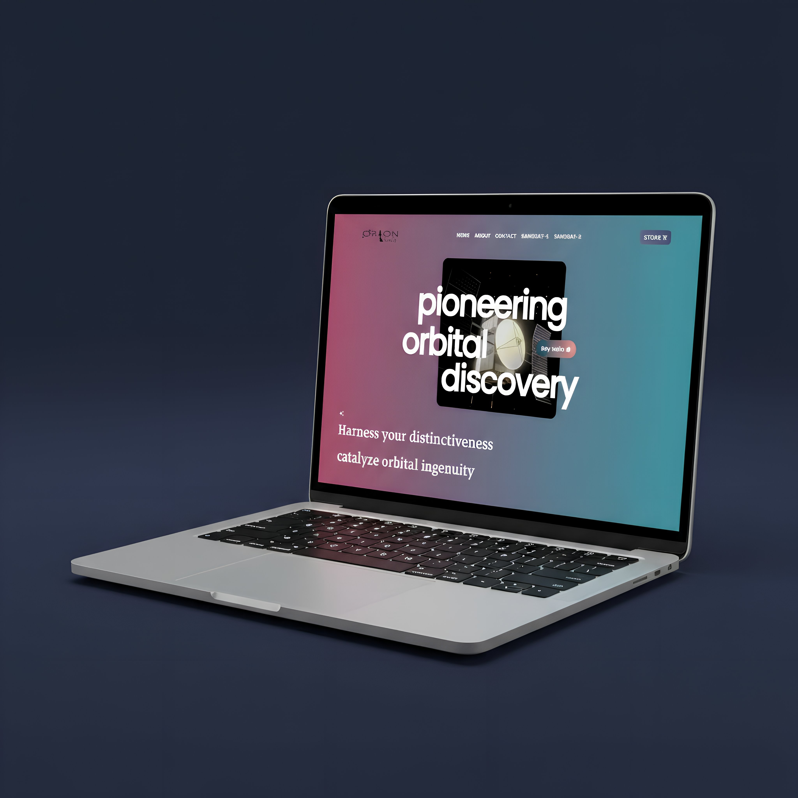
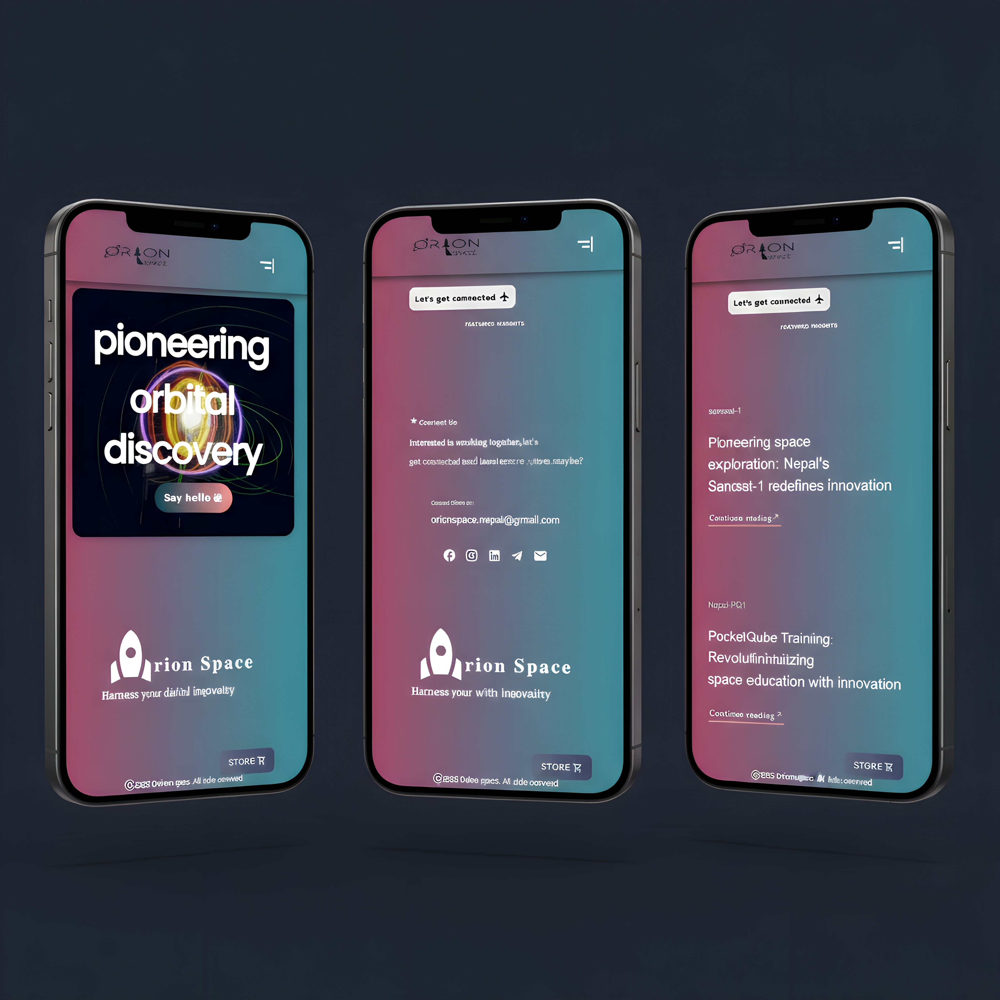

Selected work · 2024
Orion
Orion
Space.
Brand and website for Nepal's first satellite company. 5 weeks. Designed it and built it myself.
A brand identity and website for the team behind SanoSat-1, Nepal's first pico-satellite, which launched on a SpaceX rocket in 2021. Real orbital wins. No place online to tell that story. I designed the brand, the information architecture, the full screen set, the component library, and built the React site myself. Shipped it to Vercel staging.
A category leader. With a hobbyist storefront.
Their whole online presence was a single Tindie marketplace listing. Product photos, specs, customer reviews. No story. No founders. No mission. A company that put Nepal in orbit was being discovered the same way you'd find a hobbyist Arduino board.
I wrote my own brief. Move Orion Space from "Nepal-based satellite kit seller" to "the company defining Nepal's pico-satellite category." That meant brand identity, a real website, and two separate funnels: hobbyists keep going to Tindie to buy a kit, institutions get a new contact path for partnerships and quotes.

BeforeJust a Tindie listing. Product photos, specs, customer reviews. No story. No founders. No mission. No B2B path.
ContextTindie's checkout already worked. The job was to build a layer above it, not replace it.
AfterTheir own domain. A brand system. Two missions in the top nav. Editorial framing across every page.
I almost rebuilt their checkout. Glad I didn't.
Magenta to teal. Sans plus serif.
Almost every space-tech brand uses the same dark cosmos aesthetic. Black background, blue stars, white sans-serif. Orion goes the other way. Warm magenta-to-teal gradient, editorial typography. A heavy geometric sans for big display headlines. A high-contrast serif for brand voice and section headers. Confident on the surface, considered in the details.
Surface
Display
pioneering
Editorial
orbital ingenuity

Works on every screen.
The component library moves to mobile without losing anything. The display headline shrinks but stays full-width. The gradient still holds. The two CTAs collapse into one primary action with a hamburger drawer for everything else. Editorial cards stack into a single column.
Same surface. Same voice. Same components. Just reflowed for thumbs instead of cursors.

Decision log
Four strategic calls in a 5-week project.
Why magenta and teal, not the standard dark space aesthetic?
Every space-tech brand looks the same. Black background, blue stars, white text. For a small Nepal-based company trying to be approachable to both hobbyists and institutional buyers, that aesthetic feels cold and unwelcoming. Warm colors on the surface make the site feel like a place you can talk to. The serious typography keeps the credibility.
Why keep Tindie checkout instead of rebuilding commerce?
Their Tindie listing already worked. Hobbyists were already buying through it. Rebuilding the checkout would have taken 4 weeks and added nothing real. The brand site needed to do something Tindie can't: tell the story, show the founders, surface the mission. So I built that layer and let the existing checkout finish the sale. Best decision in the project, honestly.
Why two funnels, not one path?
Two audiences, two different jobs. Hobbyists want to buy a kit. Institutions want to start a conversation about a partnership or a research project. Forcing both into "buy now" loses the institutional lead. Forcing both into "contact us" loses the hobbyist who would have just bought. So the site has two paths, both visible from the top nav.
Why two typefaces, not one?
A single typeface reads safe. Orion needed something with confidence to match the orbital wins. But heavy geometric sans alone reads loud. Pairing it with a high-contrast serif lets the brand switch register: confident on the hero, considered when you read the details.
Designed it, built it, shipped it.
5-week scope, delivered on time. Brand identity, information architecture, full screen set, component library, deployed React build, all live on Vercel staging. The commercial conversation stalled before they pushed it to production. So I'm not claiming traffic numbers or conversion lift. I don't have those.
What I do have is the design work itself, viewable at the staging URL. The decision to keep Tindie checkout instead of rebuilding it saved 4 weeks. That let the brand site focus on what it could uniquely do: positioning, story, editorial framing.
5 wks
Brand to IA to screens to component library to React build to Vercel deploy. All by me.
2 funnels
Hobbyists go to Tindie to buy. Institutions get a new contact path. Two different jobs, never collapsed into one.
Live
Shipped to orion-space.vercel.app. Anyone can audit it.